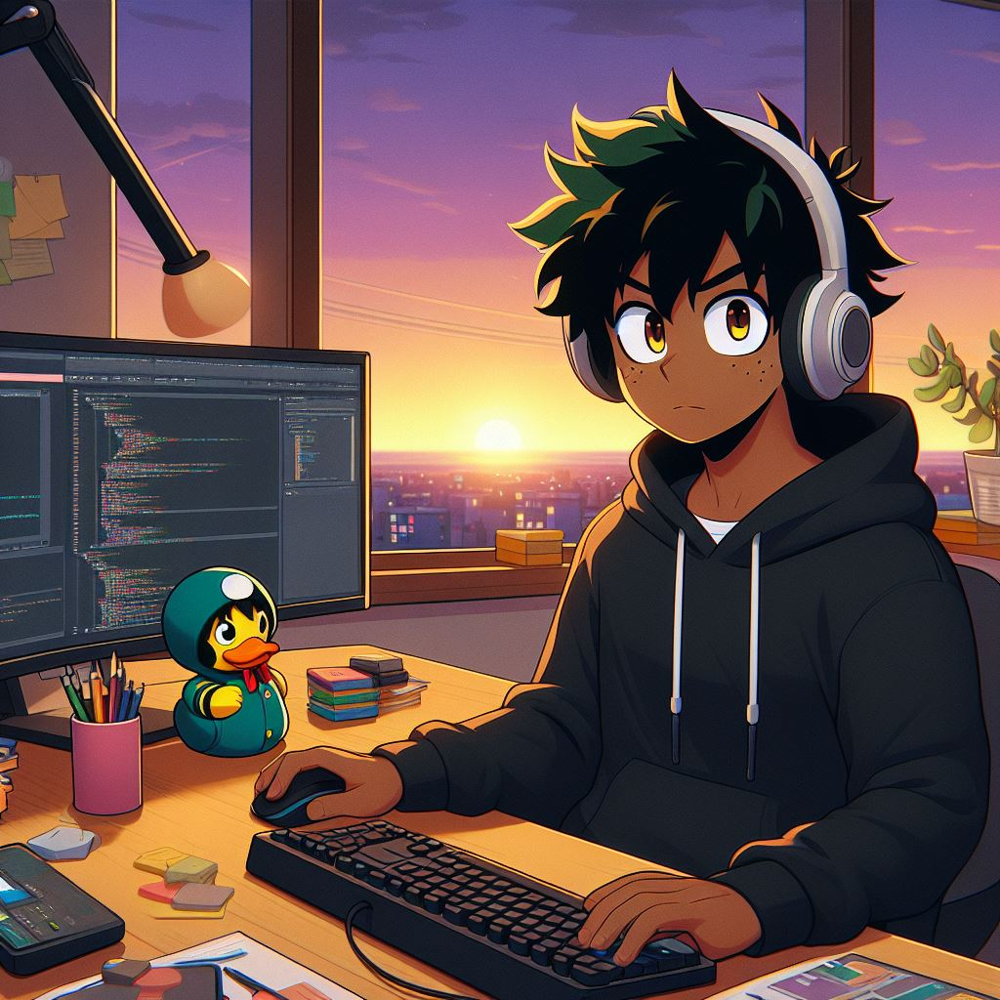

Who is Tristan
October 6, 2024
Meet Tristan, a vibrant 21-year-old Computer Science student at university, who masterfully balances his academic pursuits with his passion for music. Living in the lively Elsa Leo Rhynie Hall, he serves as the president of the TMS Tower's musical society band, where he cultivates creativity and camaraderie among fellow musicians. Beyond his musical talents, Tristan is an active participant in various sports, excelling in volleyball, table tennis, basketball, and track and field. His dynamic lifestyle exemplifies how one can harmoniously blend the rigors of study with the joy of artistic expression and athletic achievement
A day in life
October 6, 2024

Tristan is a very active person, he would start his day with a light workout before his hygienic practices and a prayer, he would then attend his classes to foster his skills and grow into his field, afterwards he goes to work and after work he normally has different clubs/societies that he will have to attend such as TMS the Tower musical society where he is an executive member. After his practices he would cook his meals then complete his assignments before going to bed.